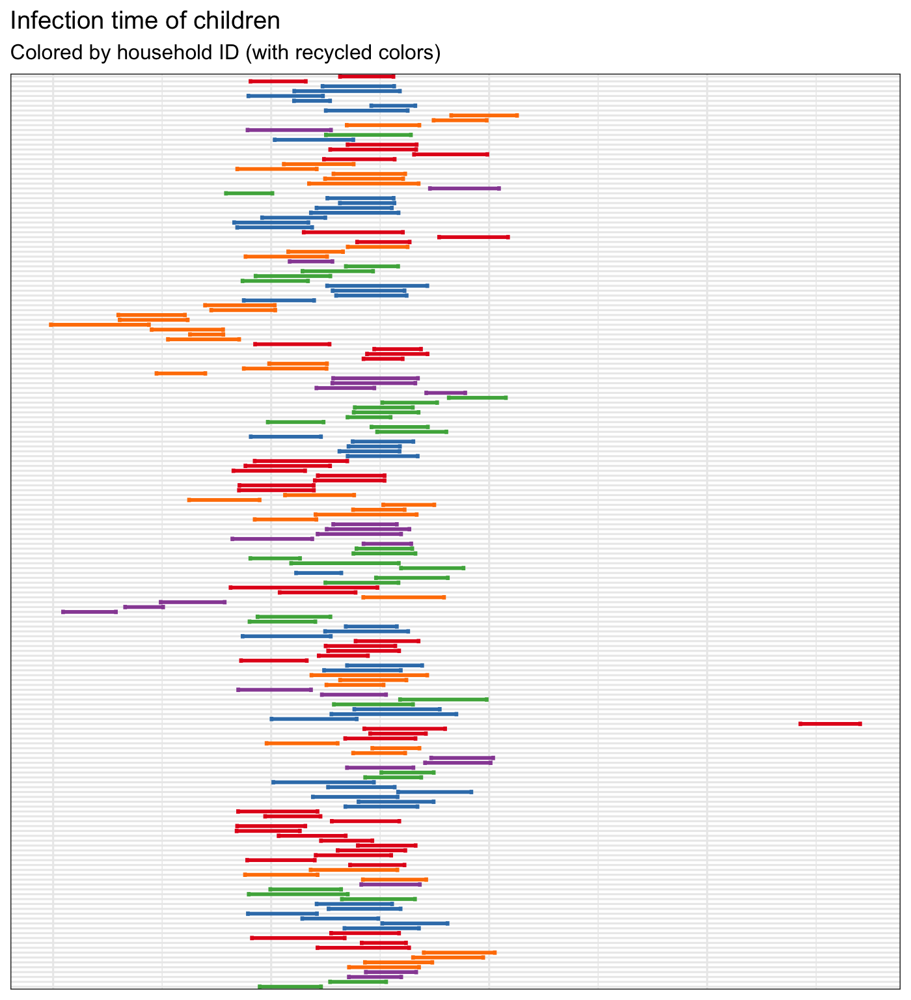
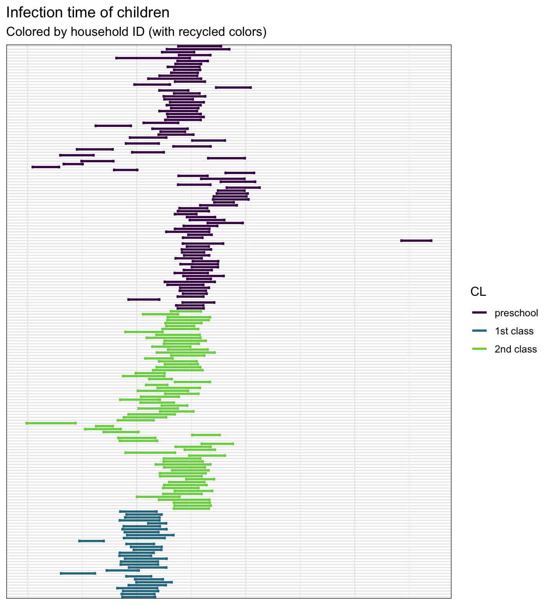
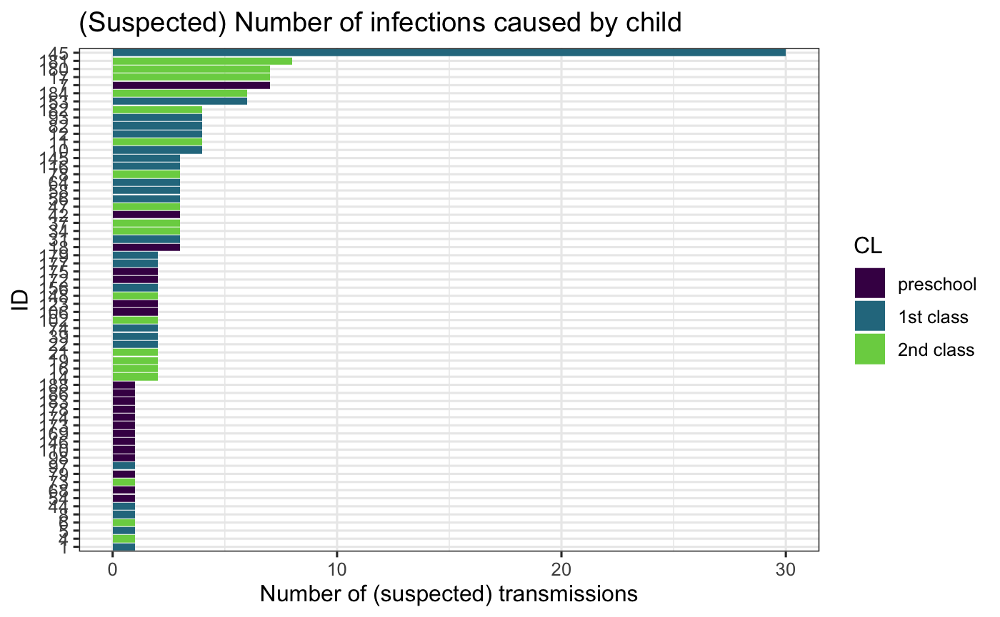
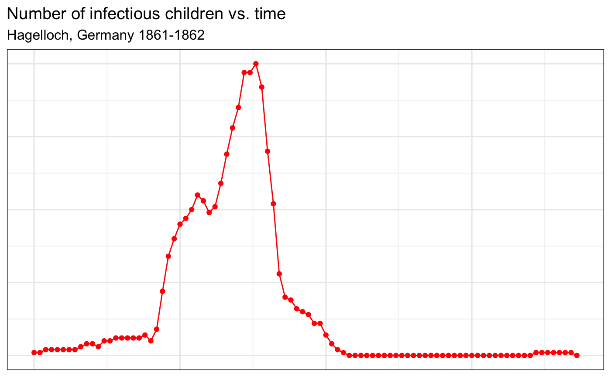
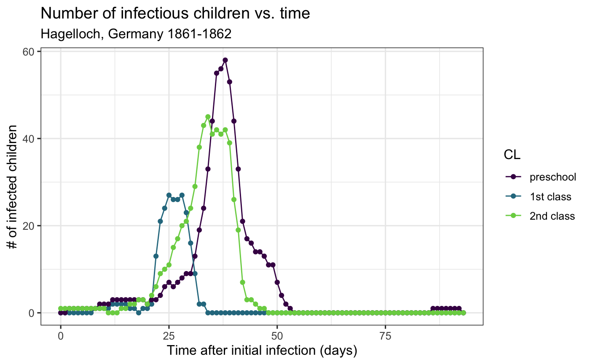

Hagelloch Measles – Pre-processing and EDA
Source:vignettes/not-built-vignettes/hagelloch-eda.Rmd
hagelloch-eda.RmdOverview
In this series of vignettes, we will demonstrate epidemic analysis pipeline from EDA to dissemination using a case study of measles.

Hagelloch series vignettes
Hagelloch 1 Pre-processing and EDA
Hagelloch 2.1 Modeling and Simulation: the SIR model
Hagelloch 2.2 Modeling and Simulation: fitting a SIR model
Hagelloch 2.3.1 Modeling and Simulation: a stochastic SIR model
Hagelloch 2.3.2 Modeling and Simulation: a stochastic SIR model
Goals in this vignette
Describe the Hagelloch measles data
Illustrate some of the interesting features
Show how
EpiComparecan be used to aid with EDA
Intro: Measles outbreak in Hagelloch, Germany 1861-1862
(Note that part of this section is taken with permission from Gallagher (2019).)
The Hagelloch data was initially collected by Pfeilsticker (1863) and further analyzed by Oesterle (1992). The data set follows the course of a measles epidemic in Hagelloch, Germany from October 30, 1861 (Day 0) until January 24, 1862, covering a period of 87 days.
This data set is available, not only in our package, but also from the surveillance package (Meyer, Held, and Höhle 2017).
Previous analyses using the this data set include Neal and Roberts (2004); Britton, Kypraios, and O’Neill (2011); Groendyke, Welch, and Hunter (2012); and Cori et al. (2013). We encourage reading these insightful analyses.
General measles information
Along with mumps, rubella, and varicella, measles is a highly infectious childhood disease. Symptoms of of the disease include high fever, cough, runny nose, and red, watery eyes. Two to three days after initial symptoms, tiny white spots may be found in the mouth. Three to five days after the symptoms begin, a rash appears on the body. A high fever (104 degrees F or more) may also be observed. Finally, the rash and fever resolve after a few days (Centers for Disease Control and Prevention 2018).
Measles is transferred from person to person through contaminated air or an infected surface. (Centers for Disease Control and Prevention 2018) reports that a person is infectious four days before and after the appearance of the rash. Measles is perhaps the most contagious person-disease on the planet, with a reproductive number estimated of around \(R_0 = 19\) (Anderson and May 1992), which means that when an infectious person is introduced to a fully susceptible population, she will infect on average 19 others. In fact, a seven year-old boy in the Hagelloch data set purportedly infected 30 other individuals. However, more recent estimates of \(R_0\) for measles are closer to 6-7 (Getz et al. 2016).
Exploring the measles dataset in R.
After loading the libraries,
you can look at the raw data using data(hagelloch_raw) and see the details with ?hagelloch_raw.
A piece of the raw data is displayed in the following table
hagelloch_raw %>% select(PN, NAME, AGE, SEX, HN, PRO, ERU, IFTO) %>% head(10) %>% kable() %>% kable_styling(bootstrap_options = c("striped", "hover"))
| PN | NAME | AGE | SEX | HN | PRO | ERU | IFTO |
|---|---|---|---|---|---|---|---|
| 1 | Mueller | 7 | female | 61 | 1861-11-21 | 1861-11-25 | 45 |
| 2 | Mueller | 6 | female | 61 | 1861-11-23 | 1861-11-27 | 45 |
| 3 | Mueller | 4 | female | 61 | 1861-11-28 | 1861-12-02 | 172 |
| 4 | Seibold | 13 | male | 62 | 1861-11-27 | 1861-11-28 | 180 |
| 5 | Motzer | 8 | female | 63 | 1861-11-22 | 1861-11-27 | 45 |
| 6 | Motzer | 12 | male | 63 | 1861-11-26 | 1861-11-29 | 180 |
| 7 | Schneck | 6 | male | 23 | 1861-11-24 | 1861-11-28 | 42 |
| 8 | Schneck | 10 | male | 69 | 1861-11-21 | 1861-11-26 | 45 |
| 9 | Schneck | 13 | male | 69 | 1861-11-26 | 1861-11-30 | 182 |
| 10 | Schneck | 7 | female | 31 | 1861-11-21 | 1861-11-25 | 45 |
where PRO is the date where prodromes (i.e. initial symptoms) began and ERU is the date of the measles rash. This data also includes the variable IFTO which is the (suspected) infector ID, which makes this data both highly informative and unusual! Only 2% of the infected children of the 188 total children do not have a reported infector ID.
The data also includes \(tI\) and \(tR\) which are estimated times of infection and recovery (see Meyer, Held, and Höhle (2017) for details). We plot the infection duration for each child, coloring the lines by household (with recycled colors) and arranging the children by household. From this we see that infection seems to be transmitted through the household ina short period of time where there is almost always overlap among infectious children within the household. We also arrange and color the lines by school grade, which shows us that the first class seems to all have been infected at approximately the same time.
Infection duration plots
By Household ID
hagelloch_raw %>% arrange(HN, NAME) %>% mutate(new_id = paste(HN, NAME, PN, sep = "-")) %>% group_by(HN) %>% mutate(new_id = forcats::fct_reorder(new_id, -tI)) %>% ggplot2::ggplot(aes(y = new_id, col = factor(HN))) + scale_colour_manual(values=rep(brewer.pal(5,"Set1"), times= ceiling(length(unique(hagelloch_raw$HN)) / 5)), guide = FALSE) + geom_errorbarh(aes(xmax = tR, xmin = tI), size = 1) + theme_bw() + labs(x = "Date", y = "Child ID", title = "Infection time of children", subtitle = "Colored by household ID (with recycled colors)") + theme(axis.text.y = element_text(size = 4))

By School Grade
hagelloch_raw %>% arrange(CL) %>% mutate(new_id = paste(CL, PN, sep = "-")) %>% group_by(CL) %>% mutate(new_id = forcats::fct_reorder(new_id, -tI)) %>% ggplot2::ggplot(aes(y = new_id, col = CL))+ geom_errorbarh(aes(xmax = tR, xmin = tI), size = 1) + theme_bw() + labs(x = "Date", y = "Child ID", title = "Infection time of children", color = "School Grade") + viridis::scale_color_viridis(discrete = TRUE, end = .8) + theme(axis.text.y = element_text(size = 4))

Infectors
We can also count the infections produced. Here we see that one child is suspected of infecting 30 of others, most of which are his first school class peers.
hagelloch_raw$inf_trans <- sapply(hagelloch_raw$PN, function(x){ sum(hagelloch_raw$IFTO == x, na.rm = TRUE)} ) hagelloch_raw %>% filter(inf_trans > 0) %>% ggplot() + geom_col(aes(x = reorder(PN, inf_trans), y = inf_trans, fill = CL)) + coord_flip() + viridis::scale_fill_viridis(discrete = TRUE, end = .8) + labs(x = "ID", y = "Number of (suspected) transmissions", title = "(Suspected) Number of infections caused by child") + theme_bw()

Data pre-processing with EpiCompare
Viewing interesting information at the agent-level is interesting, but we would also like to visualize information at the aggreate level, i.e. the total number of children in a given infection state over time.
The funnction EpiCompare::agent_to_aggregate() converts the agent level data to an aggregate view. This is demonstrated below.
aggregate_hag <- hagelloch_raw %>% agents_to_aggregate(states = c(tI, tR)) %>% rename(time = t, S = X0, I = X1, R = X2) aggregate_hag %>% head %>% kable() %>% kable_styling(bootstrap_options = c("striped", "hover"))
| time | S | I | R |
|---|---|---|---|
| 0 | 187 | 1 | 0 |
| 1 | 187 | 1 | 0 |
| 2 | 186 | 2 | 0 |
| 3 | 186 | 2 | 0 |
| 4 | 186 | 2 | 0 |
| 5 | 186 | 2 | 0 |
We can then plot, for instance, the number of infectious children over time.
aggregate_hag %>% ggplot(aes(x = time, y = I)) + geom_line(col = "red") + geom_point(col = "red") + theme_bw() + labs( x= "Time after initial infection (days)", y = "# of infected children", title = "Number of infectious children vs. time", subtitle = "Hagelloch, Germany 1861-1862")

EpiCompare::agent_to_aggregate() also works on grouped data frames, meaning that we can aggregate the children by groups such as their class.
aggregate_hag_class <- hagelloch_raw %>% group_by(CL) %>% agents_to_aggregate(states = c(tI, tR)) %>% rename(time = t, S = X0, I = X1, R = X2) aggregate_hag_class %>% head %>% kable() %>% kable_styling(bootstrap_options = c("striped", "hover"))
| CL | time | S | I | R |
|---|---|---|---|---|
| 1st class | 0 | 30 | 0 | 0 |
| 1st class | 1 | 30 | 0 | 0 |
| 1st class | 2 | 30 | 0 | 0 |
| 1st class | 3 | 30 | 0 | 0 |
| 1st class | 4 | 30 | 0 | 0 |
| 1st class | 5 | 30 | 0 | 0 |
We can then plot, for instance, the number of infectious children over time.
aggregate_hag_class %>% ggplot(aes(x = time, y = I, group = CL, col = CL)) + geom_line() + geom_point() + theme_bw() + viridis::scale_color_viridis(discrete = TRUE, end = .8) + labs( x= "Time after initial infection (days)", y = "# of infected children", title = "Number of infectious children vs. time", subtitle = "Hagelloch, Germany 1861-1862")
 From this plot, it seems that the first class may have been infected before the other two, which is something we can incorporate into a model.
In summary
In this vignette, we introduced the Hagelloch measles data set. We showed some aspects of the data at the agent-level, and at the aggregate level. We used the EpiCompare function agents_to_aggregate to pre-process the data to convert it into a format to easily view aggregate level information that is compatible with ggplot2 and other tidyverse style functions.
In the next vignette, we will…
References
Anderson, R, and R. May. 1992. Infectious Diseases of Humans. Oxford: Oxford University Press.
Britton, Tom, Theodore Kypraios, and Philip D. O’Neill. 2011. “Inference for Epidemics with Three Levels of Mixing: Methodology and Application to a Measles Outbreak.” Scandinavian Journal of Statistics 38 (3): 578–99. https://doi.org/10.1111/j.1467-9469.2010.00726.x.
Centers for Disease Control and Prevention. 2018. “Measles History.” Available online at https://www.cdc.gov/measles/about.
Cori, Anne, Neil M. Ferguson, Christophe Fraser, and Simon Cauchemez. 2013. “A New Framework and Software to Estimate Time-Varying Reproduction Numbers During Epidemics.” American Journal of Epidemiology 178 (9): 1505–12. https://doi.org/10.1093/aje/kwt133.
Gallagher, Shannon K. 2019. “Catalyst: Agents of Change. Integration of Compartment and Agent-Based Models for Use in Infectious Disease Methodology.” PhD thesis, Carnegie Mellon University. https://skgallagher.github.io/papers/gallagher_dissertation.pdf.
Getz, Wayne M, Colin Carlson, Eric Dougherty, Travis C Porco, and Richard Salter. 2016. “An Agent-Based Model of School Closing in Under-Vacccinated Communities During Measles Outbreaks.” In Proceedings of the Agent-Directed Simulation Symposium, 10. Society for Computer Simulation International.
Groendyke, Chris, David Welch, and David R. Hunter. 2012. “A Network-Based Analysis of the 1861 Hagelloch Measles Data.” Biometrics 68 (3): 755–65. https://doi.org/10.1111/j.1541-0420.2012.01748.x.
Meyer, Sebastian, Leonhard Held, and Michael Höhle. 2017. “Spatio-Temporal Analysis of Epidemic Phenomena Using the R Package surveillance.” Journal of Statistical Software 77 (11): 1–55. https://doi.org/10.18637/jss.v077.i11.
Neal, Peter J., and Gareth O. Roberts. 2004. “Statistical inference and model selection for the 1861 Hagelloch measles epidemic.” Biostatistics 5 (2): 249–61. https://doi.org/10.1093/biostatistics/5.2.249.
Oesterle, H. 1992. “Statistische Reanalyse einer Masernepidemie 1861 in Hagelloch.” Eberhard-Karls-Universität Tübingen.
Pfeilsticker, A. 1863. “Beiträge zur Pathologie der Masern mit besonderer Berücksichtigung der statistischen Verhältnisse.” Eberhard-Karls-Universität Tübingen. http://www.archive.org/details/beitrgezurpatho00pfeigoog.